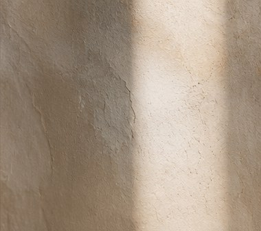
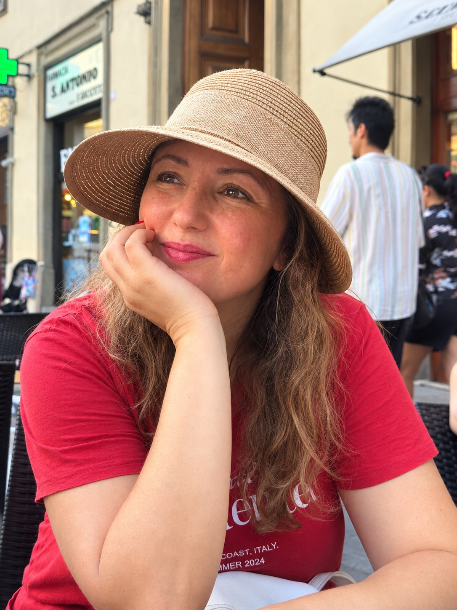

SAFAA LAACHI
penser ce qui nous traverse
BIENVENUE
Un espace pour penser, lire et écouter.
Entre psychanalyse, littérature, clinique et pensées contemporaines, ce site rassemble des textes, des lectures et des fragments autour de ce qui nous traverse.
Entrer dans les textes →01 · TEXTES
Des mots pour ce qui insiste.
Quelques textes, entre clinique, littérature et vie intérieure.
Ce qui nous regarde
Fragments et réflexions.
Le temps du désir
Notes sur l'attente et le manque.
FRAGMENTS
Quelques images pour laisser respirer les textes.

02 · LECTURES
Lire à voix haute.
Des lectures audio accompagnées d'images, dans un espace volontairement simple.
À définir
À définir
03 · À PROPOS
Une place pour penser.
Je suis psychologue clinicienne et autrice.
J’habite cet espace fragile où les mots rencontrent ce qui cherche à se dire. Ma pratique clinique m’amène chaque jour à écouter les récits singuliers, les silences, les traces et les mouvements intérieurs qui traversent chaque sujet.
L’écriture accompagne ce chemin : elle est une manière de prolonger l’écoute, d’explorer les liens entre l’intime et le collectif, entre la psychanalyse, la littérature et les questions contemporaines qui nous traversent.
Ce lieu est un espace de pensée, de lecture et de rencontre autour de ce qui, en nous, cherche encore une forme.
Psychologie clinique · Psychanalyse · Écriture · Littérature · Pensée contemporaine
